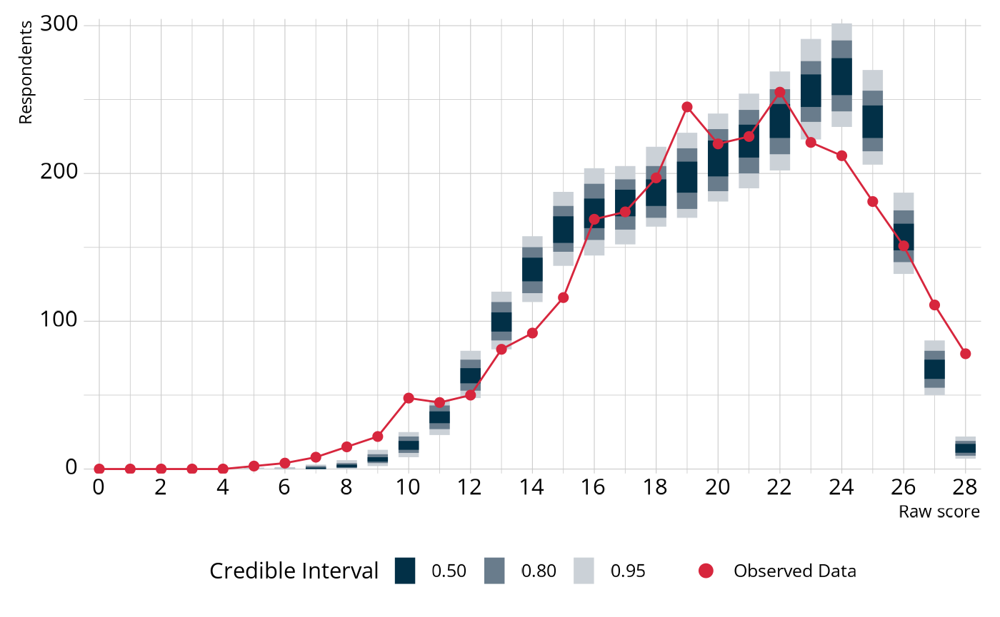

Examination for the Certificate of Proficiency in English
Source:vignettes/articles/ecpe.Rmd
ecpe.RmdThe Examination for the Certificate of Proficiency in English (ECPE) is an assessment that measures advanced English skills for individuals for whom English is not the primary language. In this case study, we’ll use data from the grammar section of the ECPE, which uses 28 items to measure 3 skills: morphosyntactic rules, cohesive rules, and lexical rules. This data set has previously been used by Templin & Hoffman (2013) and X. Liu & Johnson (2019) to demonstrate how to estimate diagnostic classification models (DCMs) with Mplus and Markov chain Monte Carlo (MCMC), respectively. Additionally, Templin & Bradshaw (2014) used this ECPE data as a motivating example for developing a hierarchical DCM, and Chen et al. (2018) used the ECPE data to evaluate the effectiveness of the M2 statistic for assessing model fit in the presence of attribute hierarchies.
Explore the Data
The ECPE data is built into measr and can be accessed by loading the
package. A complete description of the data can be viewed using
?ecpe_data.
library(dcmdata)
ecpe_data
#> # A tibble: 2,922 × 29
#> resp_id E1 E2 E3 E4 E5 E6 E7 E8 E9 E10
#> <int> <int> <int> <int> <int> <int> <int> <int> <int> <int> <int>
#> 1 1 1 1 1 0 1 1 1 1 1 1
#> 2 2 1 1 1 1 1 1 1 1 1 1
#> 3 3 1 1 1 1 1 1 0 1 1 1
#> 4 4 1 1 1 1 1 1 1 1 1 1
#> 5 5 1 1 1 1 1 1 1 1 1 1
#> 6 6 1 1 1 1 1 1 1 1 1 1
#> 7 7 1 1 1 1 1 1 1 1 1 1
#> 8 8 0 1 1 1 1 1 0 1 1 1
#> 9 9 1 1 1 1 1 1 1 1 1 1
#> 10 10 1 1 1 1 0 0 1 1 1 1
#> # ℹ 2,912 more rows
#> # ℹ 18 more variables: E11 <int>, E12 <int>, E13 <int>, E14 <int>,
#> # E15 <int>, E16 <int>, E17 <int>, E18 <int>, E19 <int>, E20 <int>,
#> # E21 <int>, E22 <int>, E23 <int>, E24 <int>, E25 <int>, E26 <int>,
#> # E27 <int>, E28 <int>We can see that the data set has one row for each respondent, and that 2,922 respondents completed this section of the ECPE. We also see that the data has 29 columns. The first column contains respondent identifiers, and the remaining 28 columns contain dichotomous item responses for each items. The item responses are coded as 0 for an incorrect response and 1 for a correct response.
In addition to the data, we also have a Q-matrix that define which
attributes are measured by each item. The Q-matrix has 28 rows, which
corresponds to the total number of items. The first column of the
Q-matrix contains item identifiers, which are the same as the column
names in ecpe_data that contain item responses. The
remaining columns define the attributes measured by the ECPE. A value of
0 indicates that the item does not measure that attribute, whereas a
value of 1 indicates that the attribute is measured by that item. For
example, item E1 measures both morphosyntactic rules and cohesive rules,
and item E4 measures only lexical rules.
ecpe_qmatrix
#> # A tibble: 28 × 4
#> item_id morphosyntactic cohesive lexical
#> <chr> <int> <int> <int>
#> 1 E1 1 1 0
#> 2 E2 0 1 0
#> 3 E3 1 0 1
#> 4 E4 0 0 1
#> 5 E5 0 0 1
#> 6 E6 0 0 1
#> 7 E7 1 0 1
#> 8 E8 0 1 0
#> 9 E9 0 0 1
#> 10 E10 1 0 0
#> # ℹ 18 more rowsFor a quick summary of the data, we can calculate the proportion of respondents that answered each question correctly (i.e., the item p-values).
library(tidyverse)
ecpe_data |>
summarize(across(-resp_id, mean)) |>
pivot_longer(everything(), names_to = "item_id", values_to = "pvalue")
#> # A tibble: 28 × 2
#> item_id pvalue
#> <chr> <dbl>
#> 1 E1 0.803
#> 2 E2 0.830
#> 3 E3 0.579
#> 4 E4 0.706
#> 5 E5 0.887
#> 6 E6 0.854
#> 7 E7 0.721
#> 8 E8 0.898
#> 9 E9 0.702
#> 10 E10 0.658
#> # ℹ 18 more rowsWe can then join the item p-values with the Q-matrix to get a sense of which attributes are the most difficult. Overall, most of the items have relatively high p-values, with most items having a p-value between .6 and .9. Note that in general, items measuring morphosyntactic rules tend to be the most difficult (i.e., lower p-values), followed by items measuring cohesive rules, and finally items measuring lexical rules.
Plot code
ecpe_data |>
summarize(across(-resp_id, mean)) |>
pivot_longer(everything(), names_to = "item_id", values_to = "pvalue") |>
left_join(ecpe_qmatrix, join_by(item_id)) |>
pivot_longer(c(morphosyntactic, cohesive, lexical),
names_to = "attribute",
values_to = "measured") |>
filter(measured == 1) |>
summarize(measures = paste(str_to_title(attribute), collapse = "/<br>"),
.by = c(item_id, pvalue)) |>
mutate(measures = fct_reorder(measures, pvalue, mean)) |>
ggplot(aes(x = pvalue, y = measures)) +
geom_point(aes(color = measures),
position = position_jitter(height = 0.2, width = 0,
seed = 1213),
size = 4, show.legend = FALSE) +
scale_color_manual(values = c("#023047", "#D7263D", "#8ECAE6", "#219EBC",
"#F3D3BD", "#000000")) +
expand_limits(x = c(0, 1)) +
scale_x_continuous(breaks = seq(0, 1, 0.2)) +
labs(x = "Item *p*-value", y = "Measured attributes")
DCM Estimation
Now that we have a feel for our data, we will estimate a DCM. Following the original analysis of the ECPE data by Templin & Hoffman (2013), we’ll estimate a loglinear cognitive diagnostic model (LCDM). The LCDM is a general diagnostic model that allows for different attribute relationships on items (e.g., compensatory, non-compensatory) and subsumes many other types of DCMs (Henson et al., 2009; Henson & Templin, 2019).
The following code will estimate an LCDM. In the first two lines, we specify our data, Q-matrix, and the respondent and item identifiers. We then specify the type of DCM we want to estimate and define how the model should be estimated. In this case, we want to estimate the model using MCMC with the rstan package as the estimation engine. Finally, we can customize how the MCMC process is executed. For this example, we specified 4 chains, each with 1,000 warmup iterations and 500 retained iterations for 1,500 iterations total. This results in a total posterior distribution of 2,000 samples for each parameter (i.e., 500 iterations from each of the 4 chains). We also specified a file so that the estimated model will be saved once it is estimated.
library(measr)
#>
#> Attaching package: 'measr'
#> The following object is masked from 'package:stats':
#>
#> optim
ecpe_spec <- dcm_specify(qmatrix = ecpe_qmatrix, identifier = "item_id",
measurement_model = lcdm(),
structural_model = unconstrained())
ecpe_lcdm <- dcm_estimate(ecpe_spec, data = ecpe_data, identifier = "resp_id",
method = "mcmc", backend = "rstan",
chains = 4, iter = 1500, warmup = 1000,
file = "fits/ecpe-lcdm")Now that we’ve estimated a model, let’s examine the output. There are three types of information we’ll examine: structural parameters, item parameters, and respondent proficiency.
Structural Parameters
The structural parameters define the base rate of membership in each
of attribute profiles. Because the ECPE data consists of 3 dichotomous
attributes, there are a total of 23 = 8 possible profiles, or
classes. We can view the possible profiles using
measr_extract(). This function extracts different aspects
of a model estimated with measr. The order of the attributes in the
profiles corresponds to the order the attributes were listed in the
Q-matrix used to estimate the model. This means that attributes 1, 2,
and 3 correspond to morphosyntactic, cohesive, and lexical rules,
respectively.
ecpe_classes <- measr_extract(ecpe_lcdm, "classes")
ecpe_classes
#> # A tibble: 8 × 4
#> class morphosyntactic cohesive lexical
#> <chr> <int> <int> <int>
#> 1 [0,0,0] 0 0 0
#> 2 [1,0,0] 1 0 0
#> 3 [0,1,0] 0 1 0
#> 4 [0,0,1] 0 0 1
#> 5 [1,1,0] 1 1 0
#> 6 [1,0,1] 1 0 1
#> 7 [0,1,1] 0 1 1
#> 8 [1,1,1] 1 1 1We can extract the structural parameters also using
measr_extract(). For structural parameters, we see the
class, or the attribute profile, and the estimated
proportion of respondents in that class with a measure of error (the
standard deviation of the posterior). For example, nearly 30% of
respondents are estimated to not be proficient on any of the attributes
(class 1), and 17% are estimated to proficient on just attributes 2 and
3 (class 7).
structural_parameters <- measr_extract(ecpe_lcdm, "strc_param")
structural_parameters
#> # A tibble: 8 × 2
#> class estimate
#> <chr> <rvar[1d]>
#> 1 [0,0,0] 0.2971 ± 0.0170
#> 2 [1,0,0] 0.0120 ± 0.0065
#> 3 [0,1,0] 0.0169 ± 0.0108
#> 4 [0,0,1] 0.1282 ± 0.0199
#> 5 [1,1,0] 0.0094 ± 0.0056
#> 6 [1,0,1] 0.0178 ± 0.0101
#> 7 [0,1,1] 0.1731 ± 0.0200
#> 8 [1,1,1] 0.3455 ± 0.0173When looking at the structural parameters, we can see that respondents typically fall into only 4 of the 8 possible profiles. Specifically, respondents are typically proficient on no attributes, only attribute 3 (lexical rules), only attributes 2 and 3 (cohesive and lexical rules), or all attributes. This may indicate the presence of an attribute hierarchy, as suggested by Templin & Bradshaw (2014), where respondents must gain proficiency of lexical rules before they can gain proficiency of cohesive rules, and then finally morphosyntactic rules.
Plot code
We can also collapse across classes to calculate the base rate of proficiency for each individual attribute. Overall, the model estimates that 38% of respondents are proficient on morphosyntactic rules, 54% of respondents are proficient on cohesive rules, and 66% of respondents are proficient on lexical rules.
ecpe_classes |>
left_join(structural_parameters, join_by(class)) |>
summarize(morphosyntactic = rvar_sum(estimate[which(morphosyntactic == 1)]),
cohesive = rvar_sum(estimate[which(cohesive == 1)]),
lexical = rvar_sum(estimate[which(lexical == 1)]))
#> # A tibble: 1 × 3
#> morphosyntactic cohesive lexical
#> <rvar[1d]> <rvar[1d]> <rvar[1d]>
#> 1 0.38 ± 0.019 0.54 ± 0.029 0.66 ± 0.015In summary, both the profile- and attribute-level base rates tell a similar story. Respondents are most likely to be proficient on lexical rules and least likely to be proficient on morphosyntactic rules. This also mirrors our analysis of item p-values when we were exploring the data, which showed that items measuring morphosyntactic rules were more difficult than items measuring lexical or cohesive rules.
Item Parameters
The item parameters define the log-odds of a respondent in each class
providing a correct response. We can again extract our estimated item
parameters using measr_extract(). Here, the
estimate column reports estimated value for each parameter
and a measure of the associated error (i.e., the standard deviation of
the posterior distribution). For example, item E1 has four parameters,
as it measures two attributes:
- An intercept, which represents the log-odds of providing a correct response for a respondent who is proficient in neither of the attributes this item measures (i.e., morphosyntactic rules and cohesive rules).
- A main effect for morphosyntactic rules, which represents the increase in the log-odds of providing a correct response for a respondent who is proficient in that attribute.
- A main effect for cohesive rules, which represents the increase in the log-odds of providing a correct response for a respondent who is proficient in that attribute.
- An interaction between morphosyntactic and cohesive rules, which is the change in the log-odds for a respondent who is proficient in both attributes.
item_parameters <- measr_extract(ecpe_lcdm, what = "item_param")
item_parameters
#> # A tibble: 74 × 5
#> item_id type attributes coefficient estimate
#> <chr> <chr> <chr> <chr> <rvar[1d]>
#> 1 E1 intercept NA l1_0 0.81 ± 0.077
#> 2 E1 maineffect morphosyntactic l1_11 0.66 ± 0.409
#> 3 E1 maineffect cohesive l1_12 0.65 ± 0.221
#> 4 E1 interaction morphosyntactic__cohesi… l1_212 0.47 ± 0.528
#> 5 E2 intercept NA l2_0 1.04 ± 0.080
#> 6 E2 maineffect cohesive l2_12 1.23 ± 0.155
#> 7 E3 intercept NA l3_0 -0.35 ± 0.075
#> 8 E3 maineffect morphosyntactic l3_11 0.74 ± 0.381
#> 9 E3 maineffect lexical l3_13 0.36 ± 0.116
#> 10 E3 interaction morphosyntactic__lexical l3_213 0.53 ± 0.398
#> # ℹ 64 more rowsWe can compare these estimates to those that Templin & Hoffman (2013) reported when using different software to estimate the same model. In the following figure, most parameters fall on or very close to the dashed line, which represents perfect agreement.
Plot code
param_compare |>
ggplot(aes(x = measr_est, y = mplus_est)) +
geom_abline(intercept = 0, slope = 1, linetype = "dashed") +
geom_point(aes(color = type, shape = type), size = 3) +
scale_color_manual(values = msr_colors) +
expand_limits(x = c(-2, 3), y = c(-2, 3)) +
coord_fixed() +
labs(x = "measr", y = "Templin & Hoffman (2013)",
color = "Parameter Type", shape = "Parameter Type")There are some parameters that deviate from the line of perfect
agreement, but these are expected. For example, take item E7, which
measures morphosyntactic and lexical rules. Both measr and Templin & Hoffman (2013) report values of
approximately -0.09 for the intercept and 0.93 for the main effect of
lexical rules. For the main effect of morphosyntactic rules, measr
estimated a value of 1.57, compared to a value of 2.86 reported by Templin & Hoffman (2013), a difference of -1.29.
Similarly, the interaction term estimated by measr is 0.39, compared to
a value of -0.95 reported by Templin &
Hoffman (2013), a difference
of 1.34. This indicates that the log-odds of providing a correct
response for an individual who has mastered both attributes is
approximately the same, regardless of software. That is, for measr, we
get a log-odds of -0.07 + 1.57 + 0.91 + 0.39 = 2.79, and
from Templin & Hoffman (2013), we get a log-odds of
-0.11 + 2.86 + 0.95 + -0.95 = 2.75. This is true for all of
the differences in the figure. There is a change to the main effect for
morphosyntactic rules and corresponding change to the interaction term
that “cancels out” the difference.
Why is this happening? Let’s revisit the proportion of respondents in each class. There are very few respondents who are proficient in morphosyntactic rules without also being proficient in both of the other attributes (classes 2, 5, and 6; less than 4% of all respondents). Therefore, there is less information for estimating the morphosyntactic main effects, which for items that measure multiple attributes, represent the increase in log-odds for proficiency in morphosyntactic rules conditional on not being proficient on the other attribute.
structural_parameters
#> # A tibble: 8 × 2
#> class estimate
#> <chr> <rvar[1d]>
#> 1 [0,0,0] 0.2971 ± 0.0170
#> 2 [1,0,0] 0.0120 ± 0.0065
#> 3 [0,1,0] 0.0169 ± 0.0108
#> 4 [0,0,1] 0.1282 ± 0.0199
#> 5 [1,1,0] 0.0094 ± 0.0056
#> 6 [1,0,1] 0.0178 ± 0.0101
#> 7 [0,1,1] 0.1731 ± 0.0200
#> 8 [1,1,1] 0.3455 ± 0.0173Because there is less information available for the morphosyntactic
main effects, the prior will have more influence on these parameters.
Note in the above figure that the main effect estimates that are off the
diagonal are less extreme when using measr. For example, the triangle at
the top right is a main effect that was estimated to be nearly 3 by
Templin & Hoffman (2013), but is just over 1.5
when the model is estimated with measr. Thus, there is a regularizing
effect, where the prior is pulling in extreme values, which is an
intended outcome. We did not discuss priors when estimating our model
and instead used the default priors provided by measr. For more
information on prior distributions, including information on how to
specify your own prior distributions for the model parameters, see
?prior and the model
estimation vignette.
Respondent Proficiency
The final piece of output from our model we will examine is the
respondent probabilities. There are two types of probabilities that we
can calculate, both of which are returned by the score()
function.
resp_probs <- score(ecpe_lcdm)
resp_probs
#> $class_probabilities
#> # A tibble: 23,376 × 5
#> resp_id class probability `2.5%` `97.5%`
#> <chr> <chr> <dbl> <dbl> <dbl>
#> 1 1 [0,0,0] 0.00000766 0.00000379 0.0000135
#> 2 1 [1,0,0] 0.0000999 0.00000723 0.000300
#> 3 1 [0,1,0] 0.000000525 0.0000000308 0.00000146
#> 4 1 [0,0,1] 0.00131 0.000735 0.00209
#> 5 1 [1,1,0] 0.0000895 0.00000767 0.000271
#> 6 1 [1,0,1] 0.0424 0.00346 0.102
#> 7 1 [0,1,1] 0.00207 0.00129 0.00310
#> 8 1 [1,1,1] 0.954 0.894 0.993
#> 9 2 [0,0,0] 0.00000584 0.00000277 0.0000108
#> 10 2 [1,0,0] 0.0000763 0.00000575 0.000243
#> # ℹ 23,366 more rows
#>
#> $attribute_probabilities
#> # A tibble: 8,766 × 5
#> resp_id attribute probability `2.5%` `97.5%`
#> <chr> <chr> <dbl> <dbl> <dbl>
#> 1 1 morphosyntactic 0.997 0.995 0.998
#> 2 1 cohesive 0.956 0.896 0.995
#> 3 1 lexical 1.00 1.00 1.00
#> 4 2 morphosyntactic 0.995 0.992 0.997
#> 5 2 cohesive 0.902 0.776 0.987
#> 6 2 lexical 1.00 1.00 1.00
#> 7 3 morphosyntactic 0.983 0.971 0.991
#> 8 3 cohesive 0.988 0.974 0.997
#> 9 3 lexical 1.00 1.00 1.00
#> 10 4 morphosyntactic 0.998 0.996 0.998
#> # ℹ 8,756 more rowsThe class_probabilites are the probabilities that the
respondent belongs to each of the 8 possible classes (i.e., profiles of
proficiency). The attribute_probabilites are the
probabilities that the respondent is proficient on each of the
individual attributes. To better describe the difference between these
two probabilities, let’s look at the results for respondent 73. When
looking at the class probabilities, the most likely profile is [1,1,1],
meaning that the respondent is proficient on all attributes. However,
there is only a 39% chance that the respondent belongs to that class.
They also have a greater than 10% chance of belonging to the [0,0,1] and
[0,1,1] classes.
resp_probs$class_probabilities |>
filter(resp_id == 73)
#> # A tibble: 8 × 5
#> resp_id class probability `2.5%` `97.5%`
#> <chr> <chr> <dbl> <dbl> <dbl>
#> 1 73 [0,0,0] 0.0493 0.0241 0.0887
#> 2 73 [1,0,0] 0.00591 0.000368 0.0204
#> 3 73 [0,1,0] 0.00458 0.000240 0.0131
#> 4 73 [0,0,1] 0.170 0.0961 0.268
#> 5 73 [1,1,0] 0.00764 0.000366 0.0289
#> 6 73 [1,0,1] 0.0131 0.00105 0.0345
#> 7 73 [0,1,1] 0.360 0.243 0.476
#> 8 73 [1,1,1] 0.389 0.247 0.534The attribute probabilities for respondent 73 show a slightly different story. These probabilities indicate that there is a 42% chance the respondent is proficient on morphosyntactic rules, a 76% chance the respondent is proficient on cohesive rules, and a 93% chance the respondent is proficient on lexical rules. That is, we’re fairly confident respondent 73 is proficient lexical rules, somewhat confident they are proficient on cohesive rules, and not confident about whether or not the student is proficient on morphosyntactic rules (i.e., the proficiency probability could reasonably be as low as 27% or as high as 57%). These probabilities can be turned into classifications by setting proficiency thresholds. For example, we might decide that probabilities greater than .5 (i.e., more likely than not) indicate proficiency (e.g., Bradshaw & Levy, 2019). On the other hand, we might want to be more confident that a respondent is proficient before reporting as such, and therefore might set a higher threshold (e.g., .8, Thompson et al., 2019). For respondent 73, thresholds of .5 and .8 would result in proficiency profiles of [0,1,1] and [0,0,1], respectively. Either way, both profiles differ from the overall most likely profile indicated by the class probabilities. Thus, it is important to give careful consideration to how results are determined before they are reported.
resp_probs$attribute_probabilities |>
filter(resp_id == 73)
#> # A tibble: 3 × 5
#> resp_id attribute probability `2.5%` `97.5%`
#> <chr> <chr> <dbl> <dbl> <dbl>
#> 1 73 morphosyntactic 0.416 0.269 0.570
#> 2 73 cohesive 0.761 0.644 0.855
#> 3 73 lexical 0.933 0.881 0.967By default, score() only returns a summary of the
posterior distribution for each probability (i.e., the mean and 95%
credible interval). There are many class and attribute probabilities,
and therefore the object containing the full posterior distributions
would be quite large. You can change the percentiles that are returned
in the posterior summary by setting the probs argument to
quantiles other than the default of
probs = c(0.025, 0.975). Alternatively, if you do want the
full posterior distribution for each probability, you can set
summary = FALSE. This will return a
posterior::rvar() object (the same as the structural and
item parameter summaries) that contains all of the posterior draws for
each probability, and is displayed as the mean of the posterior ±1
standard deviation. For more information on rvar objects,
see the accompanying vignette
(vignette("rvar", package = "posterior")).
score(ecpe_lcdm, summary = FALSE)
#> $class_probabilities
#> # A tibble: 2,922 × 9
#> resp_id `[0,0,0]` `[1,0,0]` `[0,1,0]`
#> <chr> <rvar[1d]> <rvar[1d]> <rvar[1d]>
#> 1 1 7.7e-06 ± 2.5e-06 0.0000999 ± 0.0000798 5.2e-07 ± 3.8e-07
#> 2 2 5.8e-06 ± 2.0e-06 0.0000763 ± 0.0000622 2.1e-07 ± 1.8e-07
#> 3 3 5.6e-06 ± 2.1e-06 0.0000168 ± 0.0000172 1.8e-06 ± 1.3e-06
#> 4 4 3.2e-07 ± 1.1e-07 0.0000041 ± 0.0000032 1.0e-07 ± 7.2e-08
#> 5 5 1.2e-03 ± 3.7e-04 0.0086487 ± 0.0063399 3.7e-04 ± 2.6e-04
#> 6 6 3.0e-06 ± 1.0e-06 0.0000158 ± 0.0000148 9.3e-07 ± 6.7e-07
#> 7 7 3.0e-06 ± 1.0e-06 0.0000158 ± 0.0000148 9.3e-07 ± 6.7e-07
#> 8 8 3.8e-02 ± 1.2e-02 0.0000862 ± 0.0001018 1.4e-03 ± 1.1e-03
#> 9 9 6.5e-05 ± 1.9e-05 0.0002082 ± 0.0001485 2.1e-05 ± 1.4e-05
#> 10 10 4.1e-01 ± 1.4e-01 0.4156164 ± 0.1798912 3.7e-03 ± 3.0e-03
#> # ℹ 2,912 more rows
#> # ℹ 5 more variables: `[0,0,1]` <rvar[1d]>, `[1,1,0]` <rvar[1d]>,
#> # `[1,0,1]` <rvar[1d]>, `[0,1,1]` <rvar[1d]>, `[1,1,1]` <rvar[1d]>
#>
#> $attribute_probabilities
#> # A tibble: 2,922 × 4
#> resp_id morphosyntactic cohesive lexical
#> <chr> <rvar[1d]> <rvar[1d]> <rvar[1d]>
#> 1 1 0.9966 ± 0.00067 0.96 ± 0.0251 1.00 ± 0.000116
#> 2 2 0.9950 ± 0.00133 0.90 ± 0.0558 1.00 ± 0.000074
#> 3 3 0.9827 ± 0.00522 0.99 ± 0.0058 1.00 ± 0.000079
#> 4 4 0.9976 ± 0.00051 0.99 ± 0.0057 1.00 ± 0.000014
#> 5 5 0.9880 ± 0.00235 0.98 ± 0.0086 0.95 ± 0.025971
#> 6 6 0.9924 ± 0.00211 0.99 ± 0.0058 1.00 ± 0.000068
#> 7 7 0.9924 ± 0.00211 0.99 ± 0.0058 1.00 ± 0.000068
#> 8 8 0.0044 ± 0.00193 0.44 ± 0.0818 0.96 ± 0.011942
#> 9 9 0.9452 ± 0.01210 0.98 ± 0.0061 1.00 ± 0.000766
#> 10 10 0.5448 ± 0.15235 0.12 ± 0.0621 0.11 ± 0.049288
#> # ℹ 2,912 more rowsDCM Evaluation
There are several ways we might evaluate an estimate model. In this case study, we’ll focus on two: absolute model fit and classification reliability.
Absolute Model Fit
One of the most common measures of model fit for DCMs is the
M2 statistic. This index is a limited information
goodness-of-fit measure originally described by Maydeu-Olivares &
Joe (2005, 2006) and adapted for DCMs by Y. Liu et al. (2016).
We can calculate the M2 for a model estimated with measr with
fit_m2(). In addition to the calculated M2
statistic, fit_m2() also returns the root mean square error
of approximation (RMSEA) with an associated confidence interval and the
standardized root mean square residual (SRMSR).
fit_m2(ecpe_lcdm)
#> # A tibble: 1 × 8
#> m2 df pval rmsea ci_lower ci_upper `90% CI` srmsr
#> <dbl> <int> <dbl> <dbl> <dbl> <dbl> <chr> <dbl>
#> 1 513. 325 1.32e-10 0.0141 0.0117 0.0163 [0.0117, 0.0163] 0.0320For our estimated LCDM, we see an M2 value of 512.9, which has a corresponding p-value of <.01. When interpreting the M2 and its p-value, the null hypothesis is that the model fits. Thus, the p-value represents the probability of observing an M2 value this large if the model fits. For our estimated LCDM, the p-value is extremely small, indicating that our model has poor fit.
As described in the model
evaluation vignette, a fully Bayesian estimation allows us to
evaluate model fit using posterior predictive model checks (PPMCs).
Specifically, measr supports a PPMC of the overall raw score
distribution as described by Park et al. (2015) and Thompson (2019).
For each of the replicated data sets, we calculate the number of
students with each raw score (i.e., the number of correct responses).
This can be done using fit_ppmc(). Note that we can also
calculate item-level PPMCs. However, because in this case study we are
only interested in overall model fit, we’ll set
item_fit = NULL to save some computation time.
rawscore_ppmc <- fit_ppmc(ecpe_lcdm, model_fit = "raw_score",
return_draws = 500)
rawscore_ppmc
#> $ppmc_raw_score
#> # A tibble: 1 × 7
#> obs_chisq ppmc_mean `2.5%` `97.5%` rawscore_samples chisq_samples ppp
#> <dbl> <dbl> <dbl> <dbl> <list> <list> <dbl>
#> 1 930. 28.8 12.3 58.6 <tibble> <dbl [500]> 0.0005In the output, the posterior predictive p-value
(ppp) is very small, indicating poor fit. To unpack what this
really means, let’s visualize the PPMC. In the following figure, the
blue bars show the credible intervals for the number of respondents we
would expect to see at each raw score point, given our estimated model
parameters. The red dots and line indicate the number of respondents
that were observed at each raw score point in our observed data
(ecpe_data). For example, the model expects there to be
between about 110 and 160 respondents with a total score of 14. In the
observed data, there were 92 respondents with a total score of 14. In
general, the model tends to overestimate the number of respondents with
a raw score between 14–16 and 23–25. On the other hand, the model
underestimates the number of respondents with a raw score between 6–10
and 27–28.
Plot code
library(ggdist)
obs_scores <- ecpe_data |>
pivot_longer(cols = -"resp_id") |>
summarize(raw_score = sum(value), .by = resp_id) |>
count(raw_score) |>
complete(raw_score = 0:28, fill = list(n = 0L))
rawscore_ppmc$ppmc_raw_score |>
dplyr::select(rawscore_samples) |>
unnest(rawscore_samples) |>
unnest(raw_scores) |>
ggplot() +
stat_interval(aes(x = raw_score, y = n, color_ramp = after_stat(level)),
point_interval = "mean_qi",
color = msr_colors[2], linewidth = 5,
show.legend = c(color = FALSE)) +
geom_line(data = obs_scores,
aes(x = raw_score, y = n),
color = msr_colors[3]) +
geom_point(data = obs_scores,
aes(x = raw_score, y = n, fill = "Observed Data"),
shape = 21, color = msr_colors[3], size = 2) +
scale_color_ramp_discrete(from = "white", range = c(0.2, 1),
breaks = c(0.5, 0.8, 0.95),
labels = ~sprintf("%0.2f", as.numeric(.x))) +
scale_fill_manual(values = c(msr_colors[3])) +
scale_x_continuous(breaks = seq(0, 28, 2), expand = c(0, 0)) +
scale_y_comma() +
labs(x = "Raw score", y = "Respondents",
color_ramp = "Credible Interval", fill = NULL) +
guides(fill = guide_legend(override.aes = list(size = 3)))
We can quantify how different the observed raw score distribution is from the replicated data sets by calculating a χ2-like statistic. To do this, we first calculate the expected number of students at each raw score by taking the mean of the posterior distribution for each score point. Then, for each replicated data set, we calculate χ2-like statistic as
\chi^2_{rep} = \sum_{s=0}^S \frac{[n_s - E(n_s)]^2}{E(n_s)},
where s represents the raw score, ns is
the number of respondents at score point s, and
E(ns) is the expected number of respondents at score
point s (i.e., the mean of the posterior distribution). This
calculation is completed on each of the replicated data sets, creating a
posterior distribution of χ2rep that represents
the plausible values for the χ2-like statistic if our model
is correct. This distribution is summarized in the
fit_ppmc() output. Specifically, we expect the
χ2-like statistic for our observed data to be between 12 and
59, as shown in the following figure. However, when we calculate the
statistic on our observed data, we get a value of 930, way beyond our
expected range. This is represented by the ppp value, which is
the proportion of χ2rep values that are larger
than our observed value. In this case, no values of
χ2rep were larger than our observed value, leading
to a ppp of 0.
Plot code
rawscore_ppmc$ppmc_raw_score |>
dplyr::select(chisq_samples) |>
unnest(chisq_samples) |>
ggplot(aes(x = chisq_samples)) +
stat_dots(quantiles = 500, layout = "hex", stackratio = 0.9,
color = msr_colors[2], fill = msr_colors[2],
na.rm = TRUE) +
scale_x_continuous(limits = c(0, 100)) +
labs(y = NULL, x = "χ^2^<sub>rep</sub>") +
theme(axis.text.y = element_blank(),
axis.ticks.y = element_blank())
In summary, both the M2 and raw score PPMC indicate poor fit of our estimated LCDM to the observed data. This is not unexpected, given that some classes are very small. Recall from our discussion of the estimated structural parameters that there are three classes that combine to include less than 4% of all respondents. When classes are this small, parameter estimates can be unstable, leading to poor model fit (e.g., Hu & Templin, 2020; Ma et al., 2023; Martinez & Templin, 2023; Templin & Bradshaw, 2014; Wang & Lu, 2021).
Classification Reliability
Depending on the intended uses of our assessment, we may be less
concerned with overall model fit and more concerned with the consistency
and accuracy of classifications. In other words, we may be focused on
the reliability of the classifications produced by our model. There are
several ways to evaluate the reliability evidence for DCMs. For a
comprehensive summary of methods, see Sinharay
& Johnson (2019).
Using measr, we can easily calculate a wide variety of reliability
metrics for our estimated LCDM using reliability().
ecpe_reliability <- reliability(ecpe_lcdm)
ecpe_reliability
#> $pattern_reliability
#> p_a p_c
#> 0.7387898 0.6635520
#>
#> $map_reliability
#> $map_reliability$accuracy
#> # A tibble: 3 × 8
#> attribute acc lambda_a kappa_a youden_a tetra_a tp_a tn_a
#> <chr> <dbl> <dbl> <dbl> <dbl> <dbl> <dbl> <dbl>
#> 1 morphosyntactic 0.896 0.729 0.787 0.775 0.942 0.851 0.924
#> 2 cohesive 0.852 0.674 0.703 0.699 0.892 0.876 0.823
#> 3 lexical 0.916 0.750 0.609 0.802 0.959 0.947 0.855
#>
#> $map_reliability$consistency
#> # A tibble: 3 × 10
#> attribute consist lambda_c kappa_c youden_c tetra_c tp_c tn_c gammak
#> <chr> <dbl> <dbl> <dbl> <dbl> <dbl> <dbl> <dbl> <dbl>
#> 1 morphosynt… 0.834 0.556 0.684 0.646 0.853 0.778 0.868 0.852
#> 2 cohesive 0.806 0.562 0.681 0.607 0.816 0.826 0.781 0.789
#> 3 lexical 0.856 0.553 0.626 0.670 0.875 0.894 0.776 0.880
#> # ℹ 1 more variable: pc_prime <dbl>
#>
#>
#> $eap_reliability
#> # A tibble: 3 × 5
#> attribute rho_pf rho_bs rho_i rho_tb
#> <chr> <dbl> <dbl> <dbl> <dbl>
#> 1 morphosyntactic 0.734 0.687 0.573 0.884
#> 2 cohesive 0.728 0.574 0.505 0.785
#> 3 lexical 0.758 0.730 0.587 0.915By default, reliability() returns several different
types of reliability evidence. For all types of evidence, the indices
range from 0–1, with values close to 1 indicating high accuracy or
consistency. Which information is most relevant will depend on how
scores are determined and reported. For example, we could determine each
respondent’s scores by choosing the overall profile that is most
consistent with their observed responses (i.e., the class probabilities
returned by score()). For this type of classification we
would want to look at pattern reliability, as we are classifying
responding into an overall pattern of proficiency on the attributes.
ecpe_reliability$pattern_reliability
#> p_a p_c
#> 0.7387898 0.6635520The values p_a and p_c are described by
Cui et al. (2012). Pa is the
probability classifying a random respondent into the correct class, and
Pc is the probability of consistently classifying a
random respondent into the same class across two test
administrations.
On the other hand, rather than basing results on the overall most
likely profile, we could score each attribute individually (i.e., the
attribute probabilities returned by score()). This is
accomplished by calculating the probability of proficiency on each
attribute and creating classifications based on a given threshold
(usually .5). This result is known as the maximum a posteriori
(MAP) because it represents the most likely latent state for each
respondent on each attribute. As with the pattern-level classifications,
attribute level classifications can be evaluated through accuracy and
consistency. Johnson & Sinharay (2018) developed accuracy
(acc) and consistency (consist) metrics for
attribute level classifications, and also examined other agreement
measures based on contingency tables such as Goodman & Kruskal’s λ,
Cohen’s κ, Youden’s J, the true positive rate, and the true
negative rate.
ecpe_reliability$map_reliability
#> $accuracy
#> # A tibble: 3 × 8
#> attribute acc lambda_a kappa_a youden_a tetra_a tp_a tn_a
#> <chr> <dbl> <dbl> <dbl> <dbl> <dbl> <dbl> <dbl>
#> 1 morphosyntactic 0.896 0.729 0.787 0.775 0.942 0.851 0.924
#> 2 cohesive 0.852 0.674 0.703 0.699 0.892 0.876 0.823
#> 3 lexical 0.916 0.750 0.609 0.802 0.959 0.947 0.855
#>
#> $consistency
#> # A tibble: 3 × 10
#> attribute consist lambda_c kappa_c youden_c tetra_c tp_c tn_c gammak
#> <chr> <dbl> <dbl> <dbl> <dbl> <dbl> <dbl> <dbl> <dbl>
#> 1 morphosynt… 0.834 0.556 0.684 0.646 0.853 0.778 0.868 0.852
#> 2 cohesive 0.806 0.562 0.681 0.607 0.816 0.826 0.781 0.789
#> 3 lexical 0.856 0.553 0.626 0.670 0.875 0.894 0.776 0.880
#> # ℹ 1 more variable: pc_prime <dbl>Using the cutoffs recommended by Johnson & Sinharay (2018), the cohesive rules attribute has fair accuracy while the morphosyntactic and lexical rules attributes have good accuracy. All attributes have fair classification consistency.
Finally, results could be reported as probabilities of proficiency on
each attribute, rather than a categorical classification. In this
instance, because the probabilities themselves are reported, we would
want to report the reliability or precision of that probability
estimate. This type of result is known as the expected a
posteriori (EAP) estimate because it is the expected value of the
classification. Johnson & Sinharay (2020) described four metrics for
evaluating the reliability of the EAP estimates: (1) biserial, (2)
informational, (3) parallel forms, and (4) a constrained parallel forms
originally proposed by Templin & Bradshaw (2013). In their paper, Johnson & Sinharay (2020) note that both types of
parallel form reliability tend to over estimate the reliability, and
therefore recommend using the biserial or informational reliability
metrics. These metrics are available in the reliability output as
rho_bs and rho_i.
ecpe_reliability$eap_reliability
#> # A tibble: 3 × 5
#> attribute rho_pf rho_bs rho_i rho_tb
#> <chr> <dbl> <dbl> <dbl> <dbl>
#> 1 morphosyntactic 0.734 0.687 0.573 0.884
#> 2 cohesive 0.728 0.574 0.505 0.785
#> 3 lexical 0.758 0.730 0.587 0.915Using the cutoffs suggested by Johnson & Sinharay (2020), all three attributes have poor EAP reliability. It’s not surprising that the EAP reliability is lower than MAP reliability, as it is harder to place respondents at a specific point on a scale (i.e., the probability scale) than it is to place respondents into a category. For example, let’s return to our example of respondent 73.
resp_probs$attribute_probabilities |>
filter(resp_id == 73)
#> # A tibble: 3 × 5
#> resp_id attribute probability `2.5%` `97.5%`
#> <chr> <chr> <dbl> <dbl> <dbl>
#> 1 73 morphosyntactic 0.416 0.269 0.570
#> 2 73 cohesive 0.761 0.644 0.855
#> 3 73 lexical 0.933 0.881 0.967We estimated that there is a 93% chance that this respondent was proficient on lexical rules. However, the credible interval tells us this probability could be anywhere from 88% to 97%. There’s a nine percentage point range that is plausible. We don’t have a great deal of certainty for the specific probability that the respondent is proficient in lexical rules; however, the entire plausible range is high, so we would make a classification of “proficient” regardless of where in the range the true probability of proficiency is. That is, we would consistently make the same classification decision, regardless of the uncertainty in the probability itself.
Summary
In this case study, we estimated an LCDM to analyze the ECPE data. From the model estimation, we saw that the estimates provided by measr were highly consistent with previously reported parameters estimates for the ECPE. However, model fit indices indicated that the LCDM does not do a great job of represented the observed data. This is likely due to dependencies among the attributes. To further analyze this data, we might consider a model with a different attribute structure, such as the hierarchical diagnostic classification model (Templin & Bradshaw, 2014). Despite the poor model fit, reliability indices showed that classification consistency and accuracy were generally in the fair to good range, and therefore, depending on our intended uses, this model may be sufficient for reporting respondent proficiency of the three attributes.